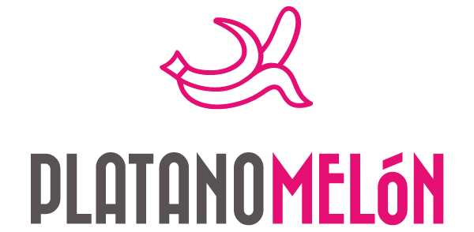
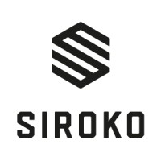

Overview
Success cases
There are our major successes
Shopify
Platanomelon
Platanomelon made a strategic transition from a rudimentary search engine, initially tailored for Shopify, to the advanced and seamless Apisearch integrated platform. This transformative decision has significantly enhanced Platanomelon's online presence and user experience across multiple countries, including Spain and México.
Prior to adopting Apisearch, Platanomelon encountered various challenges with their previous basic search engine. The issues ranged from frequent crashes (approximately 50% of the time) that hindered the overall functionality, to a subpar analysis quality and limited customization options. The search engine's unreliability and lack of advanced features prompted Platanomelon to seek a more robust solution.
With the implementation of Apisearch, Platanomelon has witnessed remarkable successes in their online performance. Notably, both the Spanish and Mexican stores have experienced an impressive click-through rate (CTR) ranging between 75% to 80%. This significant improvement is a testament to the reliability and efficiency of Apisearch's search capabilities.
Furthermore, Platanomelon has received positive feedback from their users, affirming the improved search experience and overall satisfaction with the platform. The collaboration with Apisearch has not only addressed the initial requirements set by Platanomelon but has also exceeded expectations, providing a comprehensive and tailored solution to their specific needs.
In summary, Platanomelon's switch to the Apisearch integrated platform has not only resolved the challenges they faced with their previous search engine but has also elevated their online performance, user satisfaction, and overall e-commerce capabilities across international markets.

Pains & Opportunities
- Previously, they utilized a budget service, encountering frequent search engine crashes (50% of the time).
- Experienced low-quality analysis.
- Customization options were limited and subpar.
Successes
- Achieved an impressive 75~80% Click-Through Rate (CTR) in both their Spain and México stores.
- Received positive feedback from their user base.
- Successfully met some of their initial collaboration requirements.
Custom
Carethy
Carethy, a global enterprise with nearly 120 stores operating in 12 languages worldwide, strategically transitioned from Algolia to optimize its online presence. The decision was motivated by the quest for a more cost-effective solution that could efficiently handle their substantial web traffic and cater to their diverse multilingual audience.
The challenges faced by Carethy included the prohibitively high cost associated with Algolia, difficulties in finding a reliable service supporting multisite functionality, and the need for a customized and flexible search layer. In response to these challenges, Carethy successfully implemented a series of measures.
On the positive side, they achieved seamless integration of their entire platform through a unified feed, providing comprehensive support. The management of all their sites was consolidated, enabling streamlined operations through a single feed, index, and admin panel. Importantly, Carethy significantly reduced service costs by adopting a predictable monthly fee structure.
The success story continued with an impressive Click-Through Rate (CTR) of around 45%, a noteworthy achievement for a store with multiple brands and categories. Carethy's transition not only addressed their initial pain points but also positioned them for greater efficiency and success in the dynamic landscape of online retail.
Pains & Opportunities
- Algolia's cost was prohibitive given their specific feature usage
- Challenges in finding a reliable service that supports multisite functionality
- Desire for a tailored and more flexible search layer
Successes
- Achieved integration of the entire platform through a unified feed with comprehensive support
- Streamlined management of all their sites via a single feed, index, and admin panel
- Significantly reduced service costs with a predictable monthly fee
- Attained an impressive Click-Through Rate (CTR) of around 45%, noteworthy for a multi-brand and multi-category store
Custom
Siroko
Developing a customized search engine for Siroko's 15-store, multilingual network addressed key challenges. The solution prioritized robust management and customization options, surpassing the limitations of their basic in-house engine. Multisite integration streamlined administrative workflows, crucial for a seamless user experience. Siroko's preference for a flat-fee service further optimized search operations.
Transitioning from their rudimentary in-house engine, Siroko faced constraints in customization and management. The multisite engine introduced integrated, user-friendly admin panels across 15 stores, overcoming previous limitations. The choice of a flat-fee service aligned with Siroko's goal of efficient search engine operations.
The implemented solution yielded tangible successes. Siroko achieved an impressive 50% CTR across all stores, indicative of enhanced user engagement. The search engine seamlessly incorporated Siroko's design, improving the overall user experience. Efficient multisite integration, coupled with exemplary customer service, solidified the project's success.
In summary, the custom search engine effectively met Siroko's challenges, offering a tailored solution for their diverse network. The emphasis on multisite integration and a flat-fee service resulted in improved CTR and a seamlessly integrated design, highlighting the project's success in multilingual, multisite environments.

Pains & Opportunities
- Previously utilizing a rudimentary in-house search engine, Siroko encountered limitations in terms of management and customization capabilities.
- The necessity for a multisite engine was underscored to facilitate an integrated and user-friendly administrative panel.
- Siroko sought a flat-fee service to streamline their search engine operations.
Successes
- Achieved an impressive 50% click-through rate (CTR) across all 15 stores.
- Implemented an aesthetically aligned search engine seamlessly integrated with Siroko's design ethos.
- Efficiently executed multisite integration complemented by exemplary customer service.